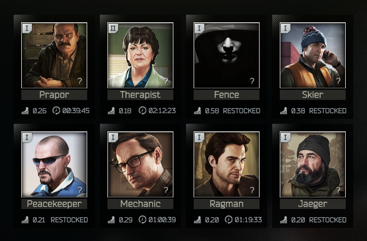

Traders
In Escape From Tarkov, you are able to trade with the various trader to aquire weapons, armor and medical items for your raids. Each of the traders have their own unique items for sale and some in different currencies. This page will provide you with a description of each of traders items for sale and who you should sell certain items to.
Prapor
Prapor has a lot of gear that is valuable for the early game progress. Affordable weapons like Aks and Mosins as well as solid ammunition for both. He some good barters such the PP-19 for some T plugs and a level 3 armor for a propane tank. As you progress towards the mid to end game for Escape From Tarkov, he has some high tier ammo sale and barter options available
Therapist
Therapist has all of the medical items. From healing items like salewas to stimunlant injecotors to painkillers, she has it all. You will do the most trading with her while playing this game whether it is buying or selling.
Fence
Fence has very overpriced gear and barter items, often costing double the price on the flea market. The only things you should be buying from Fence is armor as you can find good deals on various rigs and vests. You only should sell melee weapons and guns that do not have enough durability to be sold to Mechanic.
Skier
Skier does not have many good items for sale until you enter the late game for Escape from Tarkov. However, what little items that are worth buying are extremly valuble. Notably the M32 headset available at the beginning of the game and various handgards for the AK platform and foregrips.
Peacekeeper
Peacker does all transactions in USD, not the native rouble like most traders. He offers a conversion trade if you do not have enough dollars for a particular trade. Most of his offers are UN weapons like M4s, Scars, G36s, and AUGs. He has decent offers through out the game and has a majority of weapon mods you will be using for your weapons. Some of his weapons can be found for cheaper on the flea markets like the MDR, so check the flea market for a weapon you might be interested in.
Mechanic
Mechanic, like Therapist, is a trader you will be constantly trading with whether you are buying or selling. Early game you will be mostly selling but late game he will have a lot to offer. Like Peacekeeper, he has a lot of weapons but more weapons mods than PeaceKeeper. Some of his offers are in euros which can be exchange through Skier if you need some. Sell all of your weapons that you wish to get rid of to him as well as weapon mods
Ragman
Ragman sells all the armor and wearable gear you will need for raids. He sells armor, armored vests, backpacks, hats, helmets, face covers, sun glasses, and headsets. He has some really good armor available early game but it is very limited and expensive be aware of your money when gearing up.
Jaegar
Jaegar is like Peacekeeper and mechanic but specifically based around hunting style weapons such as bolt action rifles and shotguns. He has some good barters for valuable scopes like the Tac30. He is good trader to deal with early game since he deals with shotguns which is a good type of weapon for beginners to use. In the end game, you have a variety of barters for optics and attachments for snipers and shotguns.
Selling Guide
Below is a table showing who you should sell what type of items to. From top to bottom is the order you should sell to.
This is to get the most ammount of money for your items as some traders will give you less than others for certain items.
If a trader does not accept a certain item from a category listed in the table, then you should use the following order to find who will buy your item for the most amount of money.
| Medical items | Weapons | Armor | Ammo | Barter items | Keys | Weapon mods | Intelligence items |
|---|---|---|---|---|---|---|---|
| Therapist | Mechanic | Ragman | Mechanic | Jaeger | Therapist | Mechanic | PeaceKeeper |
| Jaeger | PeaceKeeper | Peacekeeper | Peacekeeper | Therapist | Mechanic | Jaeger | Therapist |
| Fence | Fence | Fence | Fence | Mechanic | Fence | Peacekeeper | Fence |